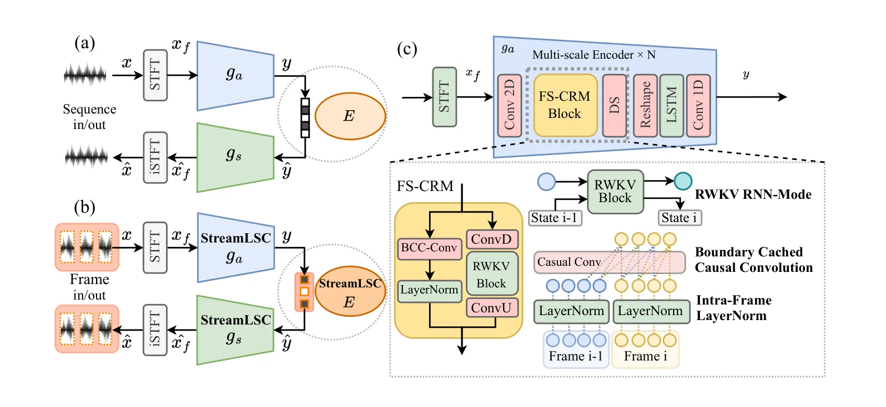
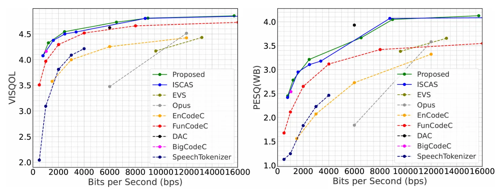
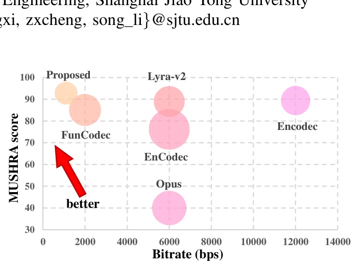

O Dilema do Streaming Neural
A compressão de áudio é um pilar fundamental para comunicações em banda larga limitada, como chamadas de voz em tempo real e transmissões via satélite. Tradicionalmente, codecs como Opus e EVS dominam esse espaço, oferecendo eficiência comprovada em taxas de bits médias. No entanto, sua dependência de características projetadas manualmente (handcrafted features) limita a qualidade perceptiva quando operamos em taxas de bits ultrabaixas, onde a informação é drasticamente reduzida.
Os codecs neurais surgiram para superar essas limitações. Ao treinar modelos de ponta a ponta com quantização diferenciável, eles aprendem representações de dados que capturam melhor a estrutura da fala. Arquiteturas baseadas em atenção, como o TS3-Codec, ou modelos no domínio do tempo, como EnCodec, demonstraram superioridade em métricas de taxa-distorção (Rate-Distortion, ou RD) em comparação aos métodos clássicos.
Mas existe um obstáculo prático: a maioria desses modelos neurais de alta performance opera em modo offline. Eles dependem de correlações de sequência completa para alcançar sua máxima fidelidade. Em cenários de streaming real, isso é inaceitável. Um codec de streaming deve processar áudio quadro a quadro (frame-by-frame), sem acesso ao contexto futuro. Isso impõe restrições de causalidade estrita tanto na arquitetura do backbone quanto nos módulos de codificação de entropia.
A Lacuna entre Causalidade e Eficiência
Os codecs neurais de streaming existentes enfrentam um trade-off inerente. Os baseados em representação com quantização vetorial (VQ) satisfazem naturalmente a causalidade, pois cada vetor é codificado independentemente, mas frequentemente exibem desempenho de RD limitado. Por outro lado, os modelos baseados em entropia, que modelam probabilidades latentes, alcançam eficiência de codificação superior, mas geralmente requerem o contexto da sequência inteira, tornando difícil adaptá-los a restrições de streaming estritas.
Os autores deste paper, da Shanghai Jiao Tong University, identificam que as designs de backbone e paradigmas de quantização atuais não conseguem simultaneamente alta eficiência de RD e causalidade estrita em nível de quadro. Para preencher essa lacuna, eles propõem o StreamLSC: um codec de fala aprendido que integra um backbone causal de longo contexto com um modelo de entropia streamable em nível de quadro.
O objetivo não é apenas criar um modelo que funcione em streaming, mas um que mantenha a equivalência numérica entre a inferência offline (treinamento) e a inferência online (deploy), permitindo que o mesmo conjunto de parâmetros seja usado em ambos os cenários sem perda de qualidade ou introdução de latência adicional.

Arquitetura do StreamLSC
O framework do StreamLSC é dividido em dois componentes principais: um backbone streamable e um modelo de entropia streamable. O backbone é construído sobre o módulo FS-CRM (Frame-Level Streaming Context-Recursive Module). Este módulo reformula as operações padrão de normalização, modelagem de sequência e convolução para um modo de streaming baseado em estado.
Diferente dos métodos anteriores que processam a sequência inteira, o StreamLSC divide o áudio em quadros não sobrepostos. Cada quadro é codificado em um bitstream parcial. A consistência entre quadros é garantida pela propagação explícita de estado. Isso permite operação em tempo real, sem a necessidade de esperar pelo final da sequência de áudio. A arquitetura utiliza convoluções causais e módulos inerentemente streamable, como indicado pelos blocos verdes no diagrama da figura 2.
Intra-Frame LayerNorm: Quebrando a Dependência Temporal
Um dos problemas centrais em adaptar modelos offline para streaming é a normalização. Em designs offline, a GroupNorm é comumente usada para estabilizar o treinamento. No entanto, a GroupNorm calcula estatísticas globais ao longo de toda a sequência, introduzindo dependências não causais. Se você normaliza um quadro atual usando estatísticas de quadros futuros, você viola a causalidade.
Para resolver isso, os autores propõem o Intra-Frame LayerNorm. Em vez de agregar estatísticas ao longo do tempo, a normalização é realizada independentemente dentro de cada quadro, agregando sobre as dimensões de recurso (F) e temporal (T) apenas dentro daquele quadro específico. A fórmula calcula a média (µ) e a variância (σ²) apenas dos elementos presentes no quadro atual.
Essa abordagem normaliza cada quadro sem armazenar nenhum estado de quadros anteriores. Ela estabiliza as ativações, preserva a estrutura fonética de curto prazo e mantém a causalidade estrita. Ao evitar o caching inter-quadro para normalização, o modelo elimina a latência e a complexidade associadas ao armazenamento de estados de normalização, um detalhe técnico crucial que muitos codecs negligenciam ao tentar forçar causalidade.
RWKV em Modo RNN: Longo Alcance sem Quadrático
Para capturar correlações de longo alcance sem violar a causalidade, o StreamLSC adota o RWKV (Receptance Weighted Key Value). O RWKV reformula o mecanismo de atenção como atualizações explícitas de estado. Em vez de calcular a atenção entre todos os pares de posições (complexidade quadrática), o modelo mantém um estado compacto que codifica informações históricas de chave-valor e resíduos.
O RWKV possui dois modos numericamente equivalentes. Durante o treinamento, o modo GPT permite computação paralela de sequência completa com aceleração CUDA, aproveitando GPUs modernas. Durante a inferência de streaming, o modo RNN permite a propagação recursiva do estado. Isso garante causalidade estrita, pois o estado atual depende apenas do estado anterior e da entrada atual, reduzindo a complexidade de O(N²) para O(N).
Convoluções Causais com Cache de Borda
Além do RWKV, o backbone utiliza Boundary-Cached Causal Convolution (BCC-Conv). Convoluções causais padrão exigem que a entrada seja zero-padded no passado, o que pode introduzir artefatos nas bordas dos quadros quando processados isoladamente. O BCC-Conv resolve isso mantendo um cache das bordas da janela de convolução do quadro anterior.
Esse cache permite que a convolução no quadro atual considere corretamente o contexto imediato do quadro anterior, sem precisar acessar todo o histórico. É uma solução elegante para o problema de 'fronteira' em streaming: você precisa de contexto passado para processar o presente, mas não pode carregar tudo. O cache mantém apenas o mínimo necessário para a janela de convolução, garantindo eficiência de memória e causalidade.
Modelo de Entropia Streamable
A compressão eficiente não depende apenas do backbone, mas também de como os latentes são codificados. O StreamLSC incorpora um quantizador de entropia streamable. O modelo de entropia extrai características auxiliares z do output do encoder y. Essas características são usadas para prever parâmetros Gaussianos (média µ e variância σ) em nível de grupo de canais.
Condicionado nesses parâmetros, o output y é codificado usando codificação autoregressiva por grupo de canais. Isso garante um modelamento de probabilidade preciso e streamable. A codificação autoregressiva garante que a probabilidade de um símbolo dependa apenas dos símbolos anteriores, respeitando a causalidade. O modelo de entropia é projetado para operar quadro a quadro, alinhando-se com o fluxo do backbone.

Resultados: Eficiência e Qualidade
Os experimentos mostram que o modelo de streaming alcança desempenho comparável à sua contraparte offline, obtendo resultados de taxa-distorção de estado da arte. Em avaliações objetivas, o StreamLSC apresenta ganhos significativos. Especificamente, há uma redução de 51,37% em BD-RATE para ViSQOL e 53,99% para PESQ em comparação com os baselines. O BD-RATE (Bjøntegaard-Delta Rate) mede a economia de bits necessária para alcançar a mesma qualidade; valores negativos indicam economia.
Avaliação Subjetiva e Percepção Humana
Além das métricas objetivas, a qualidade perceptual foi avaliada usando MUSHRA (Multi-Stimulus Method with Hidden Reference and Anchor). O gráfico na figura 1 mostra que o StreamLSC atinge qualidade perceptual superior em taxas de bits ultrabaixas. Os pontos centrais dos círculos representam a média das avaliações dos ouvintes, e o tamanho reflete a variabilidade das notas.
Os resultados indicam que, mesmo com a restrição de causalidade estrita e processamento quadro a quadro, a fidelidade percebida pela fala humana é mantida ou melhorada em relação a codecs tradicionais e outros neurais não-streamable em regimes de baixa taxa de bits. Isso valida a eficácia do Intra-Frame LayerNorm e do RWKV em preservar a estrutura fonética essencial.

Limitações e Escopo
É importante notar o escopo deste trabalho. O foco é especificamente em compressão de fala (speech compression), não áudio geral. Embora os princípios possam ser estendidos, os resultados são validados em dados de fala. Além disso, o paper destaca a eficiência em taxas de bits ultrabaixas. Em taxas de bits mais altas, onde codecs como Opus já são muito eficientes, o ganho relativo pode ser diferente, embora o StreamLSC ainda busque a fronteira de RD.
Conclusão: O Futuro do Streaming Neural
O StreamLSC demonstra que é possível alcançar alta eficiência de compressão neural com causalidade estrita em nível de quadro. Ao reformular a normalização, a modelagem de sequência e a convolução, os autores eliminam as dependências não causais que impedem o streaming em modelos neurais tradicionais. O uso de RWKV em modo RNN e o Intra-Frame LayerNorm são contribuições técnicas significativas que podem inspirar futuros designs de modelos de áudio e linguagem.
O Que Fica em Aberto
Apesar dos avanços, questões sobre a escalabilidade para contextos extremamente longos sem degradação do estado do RWKV permanecem. Além disso, a complexidade computacional do treinamento paralelo versus inferência recursiva pode variar dependendo da implementação de hardware. O paper não aborda a eficiência energética em dispositivos embarcados, um fator crítico para streaming móvel. Futuros trabalhos podem explorar a integração com outros tipos de modelagem de entropia ou a extensão para áudio multicanal.
Resumo Técnico
Em resumo, o StreamLSC combina três componentes fundamentais: Boundary-Cached Causal Convolution para contexto local causal, Intra-Frame LayerNorm para estabilidade sem dependência temporal global, e RNN-mode RWKV para modelagem de longo alcance linear. Essa combinação permite um modelo de compressão de fala aprendido que é tanto eficiente em taxa-distorção quanto estritamente causal, preenchendo uma lacuna importante entre a teoria de codecs neurais e a prática de streaming em tempo real.
O que fica
- StreamLSC resolve o conflito entre causalidade estrita e alta eficiência de compressão neural.
- Substitui normalização global por Intra-Frame LayerNorm para evitar dependências não causais.
- Utiliza RWKV em modo RNN para propagação de estado linear e causal, equivalente ao treinamento paralelo.
- Consegue ganhos de até 54% em BD-RATE sobre codecs tradicionais em baixas taxas de bits.
Paper original: Frame-Wise Streaming for Efficient Learned Speech Compression
Comentários
Nenhum comentário ainda. Seja o primeiro.